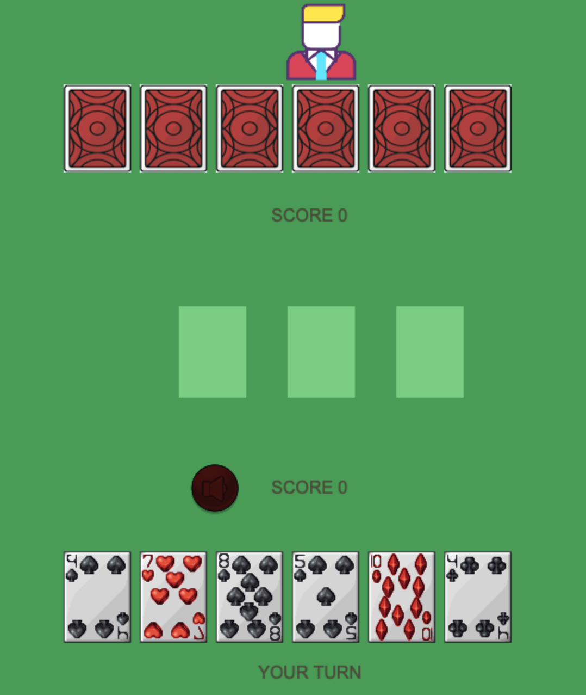

Hey there! My name is Dogukan Avci and I am a software engineer at Taleworlds, the creator of the Mount and Blade franchise that was one of the best seller games globally in Steam this year. I mainly work with C# for this job. I built many games at different platforms and I am experienced in dynamic web development with mainly using Node.js.
Projects
Multiplayer Card Game

A multiplayer card game with unique rules! The game supports multiple game rooms so many people can play simultaneously. This is a Node.js, Express, and Socket.io project. It also has a jam made by me in GarageBand.
A realtime multiplayer shooting game with expandable map. The game has an authentication page connected to Firebase. You could move between rooms and shoot each other with your friends. This is a Node.js, Express, Socket.io, Firebase, Ejs, and Phaser project.
You can now send and receive messages anonymously in Slack using this bot. This project uses Slack API to support multiple clients simultaneously. It works like a terminal with certain keywords to enable clients perform certain actions through the bot.
A strategy game with buildings and units. This is a Unity 2D project implemented with C#. Soldiers use customly created A* algorithm for navigating around and make space for each other.
You can get the number of cases and deaths along with popular articles for Covid-19 using this website from around the globe. The interactive nature of the map makes it easy to navigate. This is a Node.js and Express project.
An English word Stemmer that performs with over 90% accuracy. Built with C++. Source Code
A web table scraper library that can extract and parse tables from websites. Implemented with C++ using libcurl. Source Code
A Twitter bot that celebrates birthdays randomly. This is a Node.js project that uses Twitter API. Source Code
An interactive employee, department control application. A Spring Boot project that uses Angular, MariaDB, SQL, and TypeScript. Source Code
Autonomous robot designed and programmed with Arduino, Raspberry pi, two dc motors, lidar, line follower sensor and two color sensors. This robot solves mazes through processing the sensor data. Source Code
Developed new features and performed bug fixes for the game Mount and Blade Bannerlord.
Used C# and Plastic for development and Jira for task management.
Built 7 new features to the game.
TALEWORLDS - Software Engineering Intern (June - July 2020 )
Built 4 mods for the game Mount and Blade Bannerlord using C# and dotPeek. 2 of the mods were integrated into the game.
TERZO TECHNOLOGIES - Software Engineering Intern (July – August 2019)
Built a website using Spring Boot and Angular for training purposes. Directly collaborated with the lead software engineer to implement various functionalities on both the front end and the back end. The backend followed the guidelines of an object-oriented design.
Used MariaDB, SQL, Angular, and TypeScript to create a dynamic structure that efficiently uses the class architecture. This structure manages and introduces methods to interact with the employer related information such as wage, department and workflow.
NTSI LAB - Software Engineer Contractor (October – December 2018)
Constructed an image processing software with Java at Processing with the purpose of employing several visual cryptography techniques. The software achieved an efficient image encryption with minimal shares. The resulting pieces were exhibited at an NTSI organized exhibition.
TEI - IT Intern (June – July 2018)
Designed, created, and managed databases using SQL. Created a web platform using ASP.NET MVC framework configured to the database of the company.
Shaped the view-side with JavaScript using jQuery and AJAX requests. Created object-oriented models and managed them via controllers using C#.
NEW YORK UNIVERSITY ABU DHABI (September 2016 - May 2020)
Full Scholarship, Bachelor of Science, Computer Engineering, Official GPA: 3.63/4.0.
UNIVERSITY THESIS (September 2019 - May 2020)
Using evolutionary strategies to find the optimum transit plan for minimizing the traffic congestion while improving the service in New York bus network. This algorithm optimizes the headways and routes of the transit vehicles. The simulation runs on Sumo software and the scripting is done with Python. This is a Civil - Computer engineering cross project.
UNITED WORLD COLLEGE in MOSTAR (September 2014 – May 2016)
International Baccalaureate, Shelby Davis Scholar.
Community Experience
Milken Institute 2019 Global Conference Participant
Spoke to hundreds of people at multiple occasions regarding politics and communication.